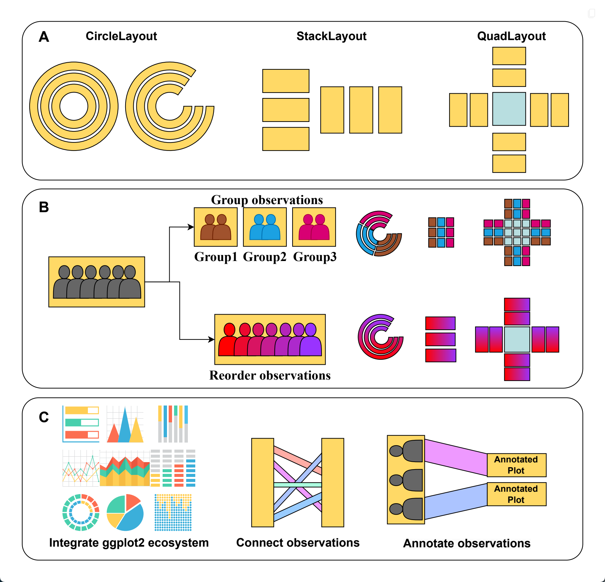

install.packages("ggalign")1 Introduction
The ggalign package extends ggplot2 to simplify the creation of complex, multi-plot visualizations, especially for biomedical research. Built on the familiar grammar of graphics, it provides intuitive tools to align and organize plots—such as heatmaps, dendrograms, or circular layouts—while handling intricate relationships in multi-omics data, like genomics or microbiomes. Whether you need to stack plots, arrange them around a central figure, or link diverse datasets (e.g., genes to pathways), ggalign offers flexibility and precision with minimal effort.
1.1 Installation
You can install ggalign from CRAN using:
Alternatively, install the development version from r-universe with:
install.packages("ggalign",
repos = c("https://yunuuuu.r-universe.dev", "https://cloud.r-project.org")
)or from GitHub with:
# install.packages("remotes")
remotes::install_github("Yunuuuu/ggalign")1.2 General design
ggalign streamlines advanced visualizations with an object-oriented Layout system that integrates seamlessly with ggplot2. It provides three core layout types:
StackLayout: Stacks plots horizontally or vertically.QuadLayout: Arranges plots in four quadrants (top, left, bottom, right) around a central plot.CircleLayout: Positions plots in a circular pattern.
Each layout supports both discrete (e.g., categories) and continuous (e.g., measurements) data, with flexible functions:
For StackLayout:
stack_discrete(): Align discrete variable along the stack.stack_continuous(): Align continuous variable along the stack.
stack_layout() integrates the functionalities of stack_discrete() and stack_continuous() into a single interface.
For QuadLayout:
quad_continuous()/ggside(): Align continuous variables in both horizontal and vertical directions.quad_discrete(): Align discrete variables in both horizontal and vertical directions.
quad_layout() aligns either discrete or continuous variables, horizontally or vertically. The functions quad_continuous() and quad_discrete() are specialized versions of quad_layout() (Section 8.5).
For CircleLayout:
circle_discrete(): Align discrete variable in the circle.circle_continuous(): Align continuous variable in the circle.
circle_layout() integrates the functionalities of circle_discrete() and circle_continuous() into a single interface.
Note: For simplicity, this book uses
stack_layout(),quad_layout(), andcircle_layout()to refer to their respective layout variants.

1.3 Align axes in ggplot2
Before exploring ggalign, let’s cover axis alignment in ggplot2. For continuous axes, it’s simple: set the same limits using the limits (or xlim/ylim) argument in *_continuous() functions.
Discrete axes are trickier. You need the same number of unique values and consistent ordering across plots. In ggplot2, this can be tough with long-form data frames, as plots may reorder data automatically. ggalign solves this by using matrix inputs for layouts aligning discrete axes (e.g., *_discrete() functions). Each matrix row represents a unique discrete value (an “observation”), and the number of rows defines the total unique values. Reordering rows ensures consistent alignment across plots. This is especially handy for functions like quad_layout() or ggheatmap(), where axes align in both directions—matrices transpose easily.
When rendering, ggalign converts the matrix into a long-form data frame. If the matrix format doesn’t fit your plot’s needs, use scheme_data() to transform the data for the plot.
Terminology:
"Observations"and"discrete variables"are interchangeable here. Any mention of"observations"applies to discrete variables too.